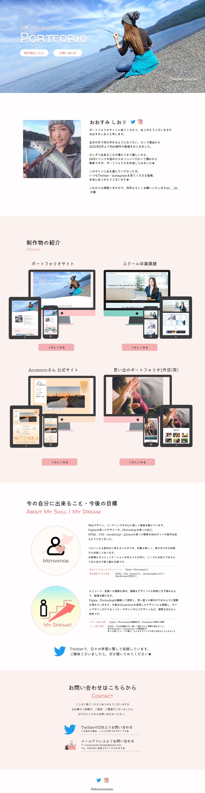
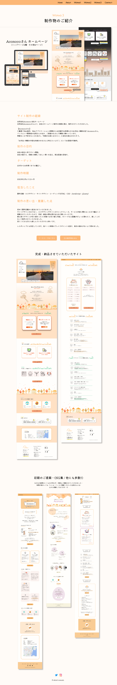

Works１
制作物のご紹介

- サイト制作の経緯
- Twitterを見てくださる方が少しずつ増え、自己紹介にもつながるポートフォリオを作りたいと考えたのがきっかけです。
私事ですが2021年11月、初めてお仕事をいただき、12月に「納品」というものを経験させていただきました。
ご紹介できる作品もできて嬉しい！ということから、憧れのポートフォリオを作成した次第です！
※初めてのお仕事に関してはこちら♡ - 制作の目的・目標
- SNSにリンクを添付すること！
Twitterからみてくださる方が増えたらとても嬉しい。 - ターゲット
- Twitter・Instagramから足を運んでくださった方。自身に興味を持ってくださった方。
- 制作期間
- 10日
- 担当したこと
- 要件定義・デザイン・コーディング(HTML・CSS・jQuery ・JavaScript)
- 制作の思い出・意識した点
- 就活用と堅く考えず、SNSからも見ていただけたら嬉しいなという気持ちと、もし見てくださった方にはありがとう!!!という気持ちを1番に考え、挨拶文は制作物紹介よりも上に配置しました。
長年の夢だったSNSへのリンクの掲載も、制作理由の1つです。
技術的なアピールはまだまだ難しいため…自分はこんな人間です、ということが伝わったら何よりと考え、まとめてみました。
制作物はこだわった点、制作で感じたこと、最初はこんなデザインでした、など詳しく紹介させていただきました。

